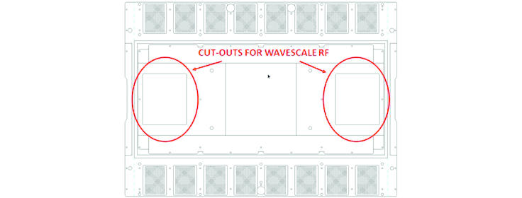

Twinning Wave Scale RF requirements
For Wave Scale RF applications of SmarTest 8, it is necessary to provide 2 cut-outs on the Twinning family board
The cut-out regions are shown in red in the figure below.

This will create limitations on the available routing and component space in the Twinning family board. For more details on the family board layout, see Twinning DUT and family board info.
Functional changes
- Introduced in SmarTest 8.2.0